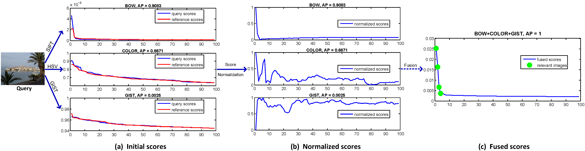

Query-Adaptive Late Fusion for Image Search and Person Re-identification
In this page, we provide the data and MATLAB code for our CVPR'15 paper.
If you find our code useful to your research, please kindly cite our work as,
The pipeline of our method is shown below,

In our work, we fuse five features, i.e., BoW [1], HSV histogram [2], GIST [3], random projection [4], and Caffe [5]. The last four features are L2-normalized
(1) For BoW, we use the 128-bit Hamming Embedding technique [1]. We have provided this baseline code here.
(2) For each image, we extract a 1000-dim HSV histogram as global feature. The number of bins on three channels is [20, 10, 5]. We further add a root operator and L2 normalize the feature vector [2].
(3) We extract a 512-dim GIST descriptor using the default parameters provided by [3].
(4) We extract a 1000-dim random projection feature specified in [4].
(5) We extract a 4096-dim CNN feature from fc6 in Caffe framework.
Among the five features, BoW, HSV, and Caffe are generally good features, while GIST and random features are ineffective ones.
Our method on Holidays dataset
On Holidays dataset, we achieve mAP = 87.98% by fusing the five features.
MATLAB code is provided on Google Drive here, or Baidu Disk here. The size of this package is 1.38G.
Note that, we provide a number of 100k references of which 1000 are used for kNN search. Each reference is of length 1490. One can test the impact of different numbers of references on search accuracy.
Our method on Ukbench dataset
On Ukbench dataset, we achieve N-S = 3.84 by fusing the five features.
MATLAB code is provided on Google Drive here, or Baidu Disk here. The size of this package is 1.86G.
Note that, we provide a number of 1491 references, and all of them are used for kNN search. Each reference is of length 10199. The reason why we do not provide 100k references is that, it would make the file too large (over 30G).
Our method on VIPeR dataset
On VIPeR dataset [7], we test five features.
1) BoW histogram based on local Color Histogram (CH). It is 5600-dim.
2) BoW histogram based on local Color Names (CN). It is 12000-dim.
3) BoW histogram based on local HOG. It is 16000-dim.
4) BoW histogram based on local LBP. It is 16000-dim.
5) Image similarity calculated using code from [6].
Note that, the BoW histograms in 1) 2) 3) 4) are calculated using the method in our previous work [8], and the codes can be found at the project page.
MATLAB code is provided on Google Drive here, or Baidu Disk here. The size of this package is 434.1M.
In the code, we test eight different feature combinations. We also draw the CMC curve for all these combinations. Specifically, when fusing all five features, we obtain rank-1 accuracy = 30.89%.
New!
We also provide the code to compute the BoW representations based on both CN and CH descriptors. This code is also used in our ICCV15 paper. Code on Baidu Pan is here, and Google Drive here.
If you have any problem, please contact me at liangzheng06@gmail.com
References
[1] H. Jegou et al. Hamming embedding and weak geometric consistency for large scale image search. In ECCV, 2008.
[2] L. Zheng et al. Packing and padding: coupled multi-index for accurate image retrieval. In CVPR, 2014.
[3] A. Oliva and A. Torralba. Modeling the shape of the scene: A holistic representation of the spatial envelope. IJCV, 42(3):145–175, 2001.
[4] J. Wright et al. Robust face recognition via sparse representation. PAMI, 31(2):210–227, 2009.
[5] Y. Jia. Caffe: An open source convolutional architecture for fast feature embedding. http://caffe.berkeleyvision.org/, 2013.
[6] R. Zhao, W. Ouyang, and X. Wang. Unsupervised salience learning for person re-identification. In CVPR, 2013.
[7] D. Gray, S. Brennan, and H. Tao. Evaluating appearance models for recognition, reacquisition, and tracking. In IEEE International workshop on performance evaluation of tracking and surveillance. Citeseer, 2007.
[8] L. Zheng*, L. Shen*, Lu. Tian*, S. Wang, J. Bu, and Q. Tian. Person Re-identification Meets Image Search. arXiv:1502.02171, 2015. (*equal contribution.)